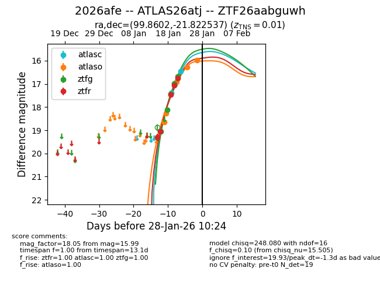
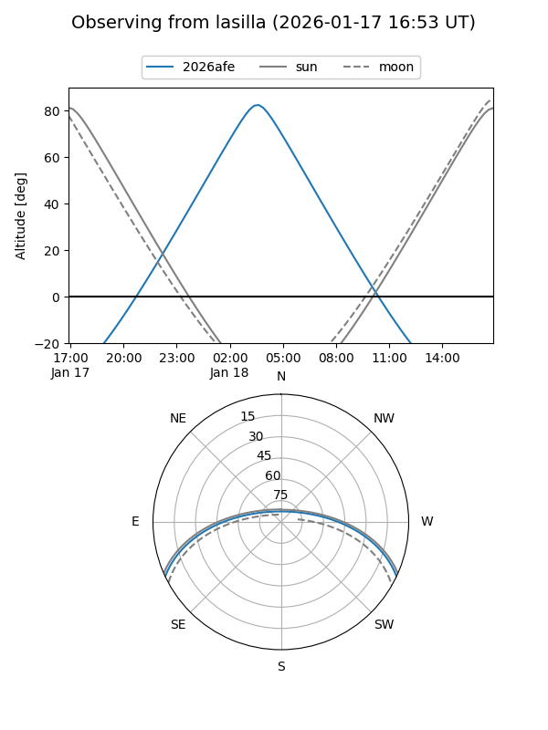
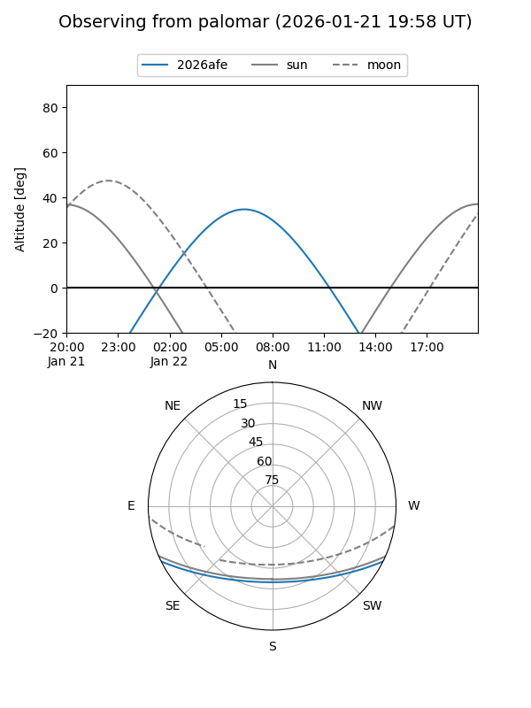
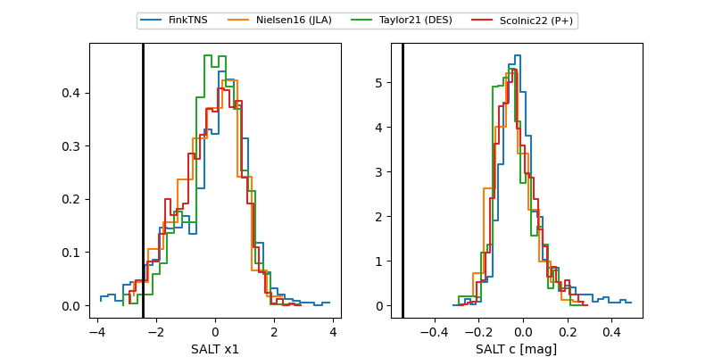

2026afe
Target 2026afe at 2026-01-16 08:40
Aliases and brokers:
FINK: link
Lasair: link
ALeRCE: link
TNS: link
YSE: link
alt names
ZTF26aabguwh (ztf,fink_ztf)
2026afe (tns,yse)
Coordinates:
equatorial (ra, dec) = 99.8602,-21.82254
equatorial (HMS+DMS) = 06:39:26.44,-21:49:21.13
galactic (l, b) = (231.3483,-12.28267)
Flags:
Photometry:
last ztfg=19.04, ztfr=19.06
1 ztfg, 2 ztfr detections
Lightcurve

Visibility


Additional plots
